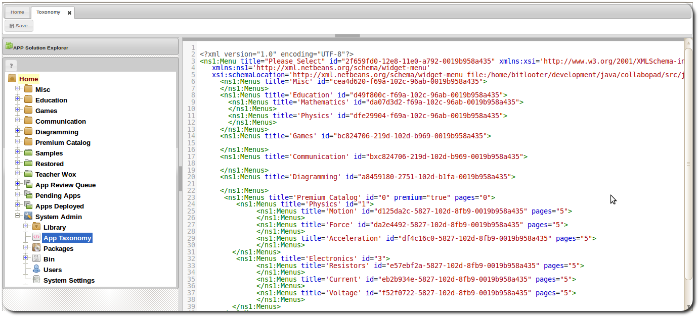

APP Taxonomy
Managing System APP Taxonomy
The APP taxonomy is an xml structure that represents the organization of APPs on a system. The taxonomy
can be edited to add new categories or change the name of a category or remove an existing category.

Simply edit this file to manage the system taxonomy. The Taxonomy governs the APP menu and also the category structure in the APP store. It also appears in the APP config dialog for developers to to choose from. The Taxonomy is also the default category structure for developers to add APPs to.